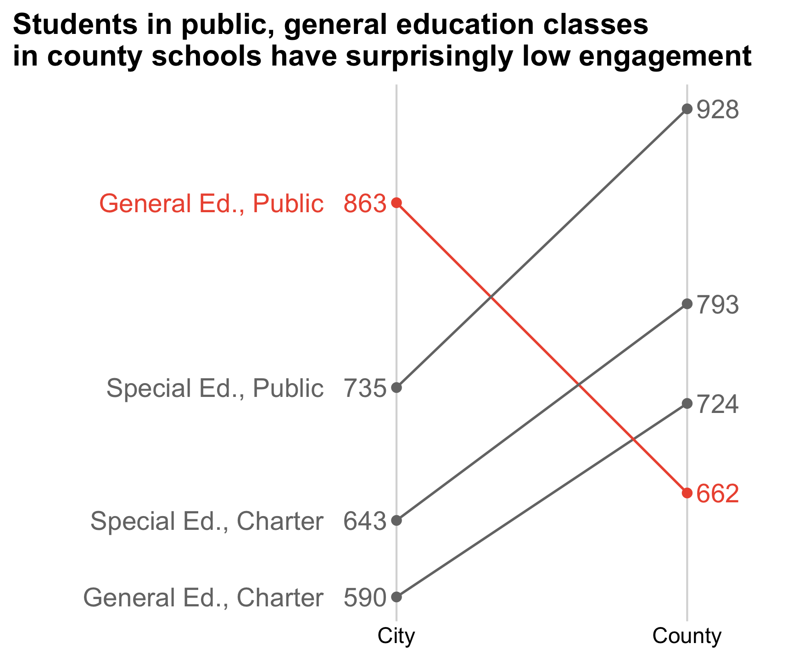
Getting Started
EMSE 4572/6572: Exploratory Data Analysis
John Paul Helveston
August 26, 2026
Week 1: Getting Started
1. Course Goal
2. Course Introduction
3. Quarto
4. Workflow & Reading In Data
5. Wrangling Data
6. Visualizing Data
Week 1: Getting Started
1. Course Goal
2. Course Introduction
3. Quarto
4. Workflow & Reading In Data
5. Wrangling Data
6. Visualizing Data
Course 1: Intro to Programming for Analytics
“Computational Literacy”
- Programming: Conditionals (if/else), loops, functions, testing, data types.
- Analytics: Data structures, import / export, basic data manipulation & visualization.
Course 2: Exploratory Data Analysis
“Data Literacy”
- Strategies for conducting an exploratory data analysis.
- Design principles for visualizing and communicating information extracted from data.
- Reproducibility: Reports that contain code, equations, visualizations, and narrative text.
Class goal: translate data into information
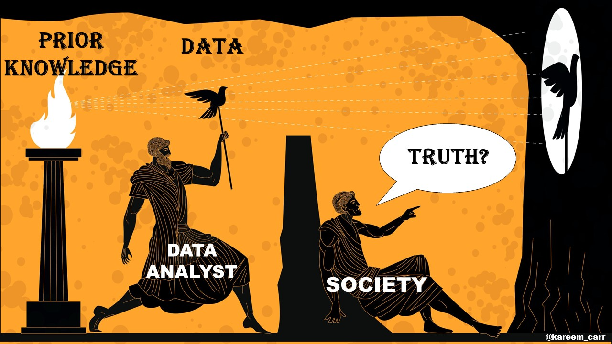
Class goal: translate data into information
Data
Average student engagement scores
| Class | Type | City | County |
|---|---|---|---|
| Special Ed. | Charter | 643 | 793 |
| Special Ed. | Public | 735 | 928 |
| General Ed. | Charter | 590 | 724 |
| General Ed. | Public | 863 | 662 |
Information
Data exploration: an iterative process
Encode data:
#> City County School
#> 1 643 793 Special Ed., Charter
#> 2 735 928 Special Ed., Public
#> 3 590 724 General Ed., Charter
#> 4 863 662 General Ed., PublicRe-format data for plotting:
#> # A tibble: 8 × 3
#> School Location Engagement
#> <chr> <chr> <dbl>
#> 1 Special Ed., Charter City 643
#> 2 Special Ed., Charter County 793
#> 3 Special Ed., Public City 735
#> 4 Special Ed., Public County 928
#> 5 General Ed., Charter City 590
#> 6 General Ed., Charter County 724
#> 7 General Ed., Public City 863
#> 8 General Ed., Public County 662Data exploration: an iterative process
Data exploration: an iterative process
Directly label figure:
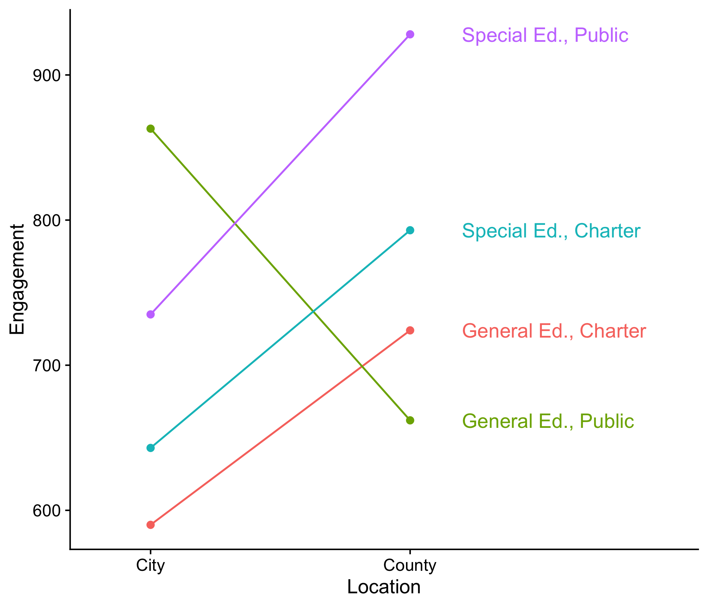
Remove unnecessary axes, change colors, fix labels:

A fully reproducible analysis
Clean the data
data <- data.frame(
City = c(643, 735, 590, 863),
County = c(793, 928, 724, 662),
School = c(
"Special Ed., Charter", "Special Ed., Public",
"General Ed., Charter", "General Ed., Public"
),
Highlight = c(0, 0, 0, 1)
) %>%
pivot_longer(
cols = c(City, County),
names_to = "Location",
values_to = "Engagement"
) %>%
mutate(
Location = fct_relevel(Location, c("City", "County")),
Highlight = as.factor(Highlight),
x = ifelse(Location == "County", 1, 0)
)Make the plot
plot <- ggplot(data, aes(
x = x, y = Engagement, group = School, color = Highlight
)) +
geom_point() +
geom_line() +
scale_color_manual(values = c("#757575", "#ed573e")) +
labs(
x = "Sex", y = "Engagement",
title = "County general-ed classes have low engagement"
) +
scale_x_continuous(
limits = c(-1.2, 1.2),
labels = c("City", "County"), breaks = c(0, 1)
) +
geom_text_repel(aes(label = Engagement), size = 5) +
theme_cowplot() +
background_grid(major = "x") +
theme(legend.position = "none")
Data exploration: an iterative process

Week 1: Getting Started
1. Course Goal
2. Course Introduction
3. Quarto
4. Workflow & Reading In Data
5. Wrangling Data
6. Visualizing Data
Meet your instructor!

John Helveston, Ph.D.
- 2025 - Present: Associate Professor, EMSE (w/tenure)
- 2018 - 2025: Assistant Professor, EMSE
- 2016-2018: Postdoc at Institute for Sustainable Energy, Boston University
- 2016: PhD in Engineering & Public Policy at Carnegie Mellon University
- 2015: MS in Engineering & Public Policy at Carnegie Mellon University
- 2010: BS in Engineering Science & Mechanics at Virginia Tech
- Website: www.jhelvy.com
Meet your tutor!
Lydia Ko
- Learning Assistant (LA)
- EMSE Junior & P4A / EDA alumni
- Check out her team’s project from 2025
Prerequisites
EMSE 4574 / 6574: Intro to Programming for Analytics
You should be able to:
- Use Positron to write basic R commands.
- Know the distinctions between different R operators and data types, including numeric, string, and logical data.
- Use tidyverse functions to wrangle and manipulate data in R.
- Use the ggplot2 library to create plots in R.
Course website
Everything you need will be on the course website:
https://eda.seas.gwu.edu/2026-Fall/
The schedule is the best starting point
Quizzes (10% of grade)
At the start of class every other week-ish. Make ups only for excused absences (i.e. don’t be late).
5 total, lowest dropped
10 minutes
Why quiz at all? The “retrieval effect” - basically, you have to practice remembering things, otherwise your brain won’t remember them (see the book “Make It Stick: The Science of Successful Learning”)
Assignments
1) Weekly Reflections: HW1
2) 3 Mini Projects (due 2 weeks from date assigned)
Undergrads: Teams of 3 - 4 students
Grads: Teams of 2 students
| Item | Due Date |
|---|---|
| Proposal | Sep 20 |
| Initial Report | Nov 01 |
| Final Report | Dec 06 |
| Presentation | Dec 08 |
Grades
| Item | Weight | Notes |
|---|---|---|
| Participation / Attendance | 5 % | (Yes, I take attendance) |
| Reflections | 13 % | Weekly assignment, lowest dropped |
| Quizzes | 10 % | 5 quizzes, lowest dropped |
| Mini Project 1 | 9 % | Individual assignments |
| Mini Project 2 | 9 % | |
| Mini Project 3 | 9 % | |
| Final Project: Proposal | 6 % | Team project |
| Final Project: Progress Report | 6 % | |
| Final Project: Report | 17 % | |
| Final Project: Presentation | 6 % | |
| Final Interview | 10 % | Individual interview |
Grades

Course policies
BE NICE
BE HONEST
DON’T CHEAT
Copying is good, stealing is bad
“Plagiarism is trying to pass someone else’s work off as your own. Copying is about reverse-engineering.”
– Austin Kleon, from Steal Like An Artist
Use of AI
- Large language models (LLMs) are pretty good
- Sometimes they suck.
- I will grade whatever you submit. It should not suck.
Ways to not have your work suck:
- Don’t submit code that doesn’t run (actually run it before submitting it).
- Actually read what the AI generates, and don’t submit something you don’t understand. (Ask the LLM to explain why something works or doesn’t work)
Use the approach I teach: agentic workflows (starting next week)
Late submissions
- 3 late days - use them anytime, no questions asked
- No more than 2 late days on any one assignment
- Contact me for special cases
How to succeed in this class
Participate during class!
Start assignments early and read carefully!
Actually read (before class)!
Get sleep and take breaks often!
Ask for help!
Getting Help
Use Slack to ask questions.
Meet with your tutors
Schedule a meeting w/Prof. Helveston (Mon/Tue/Fri)
Course Software
Slack: turn notifications on!
Posit Cloud (Register for free!)
Break
If you haven’t already, install everything on the software page
Stand up, meet each other, (maybe form teams?…use this sheet)
05:00
Week 1: Getting Started
1. Course Goal
2. Course Introduction
3. Quarto
4. Workflow & Reading In Data
5. Wrangling Data
6. Visualizing Data
Quick demo
1. Open quarto_demo.qmd
2. Click “Preview”
Anatomy of a .qmd file
Header
Markdown text
R code
Define overall document options in header
Add table of contents, change theme
More on themes at https://quarto.org/docs/output-formats/html-themes.html
Render to multiple outputs
Anatomy of a .qmd file
Header
Markdown text
R code
Right now, bookmark this! 👇
https://commonmark.org/help/
(When you have 10 minutes, do this! 👇)
https://commonmark.org/help/tutorial/
Headers
Basic Text Formatting
Type this…
normal text_italic text_*italic text***bold text*****bold italic text***~~strikethrough~~`code text`
..to get this
- normal text
- italic text
- italic text
- bold text
- bold italic text
strikethroughcode text
Lists
Links
Simple url link to another site:
Anatomy of a .qmd file
Header (think of this as the “settings”)
Markdown text
R code
R Code
Inline R code
Produces this:
The sum of 3 and 4 is 7
R Code chunks
…will produce this when rendered:
#> Rows: 344
#> Columns: 8
#> $ species <fct> Adelie, Adelie, Adelie, Adelie, Adelie, Adelie, Adelie, Adelie, Adelie, Adelie, Adelie, Adelie, Adelie, Adelie, Adelie, Adelie, Adelie, Adelie, Adelie, Adelie, Adelie, Adelie, Adelie, Adelie, Adelie, Adelie, Adelie, Adelie…
#> $ island <fct> Torgersen, Torgersen, Torgersen, Torgersen, Torgersen, Torgersen, Torgersen, Torgersen, Torgersen, Torgersen, Torgersen, Torgersen, Torgersen, Torgersen, Torgersen, Torgersen, Torgersen, Torgersen, Torgersen, Torgersen, Bi…
#> $ bill_length_mm <dbl> 39.1, 39.5, 40.3, NA, 36.7, 39.3, 38.9, 39.2, 34.1, 42.0, 37.8, 37.8, 41.1, 38.6, 34.6, 36.6, 38.7, 42.5, 34.4, 46.0, 37.8, 37.7, 35.9, 38.2, 38.8, 35.3, 40.6, 40.5, 37.9, 40.5, 39.5, 37.2, 39.5, 40.9, 36.4, 39.2, 38.8, 42…
#> $ bill_depth_mm <dbl> 18.7, 17.4, 18.0, NA, 19.3, 20.6, 17.8, 19.6, 18.1, 20.2, 17.1, 17.3, 17.6, 21.2, 21.1, 17.8, 19.0, 20.7, 18.4, 21.5, 18.3, 18.7, 19.2, 18.1, 17.2, 18.9, 18.6, 17.9, 18.6, 18.9, 16.7, 18.1, 17.8, 18.9, 17.0, 21.1, 20.0, 18…
#> $ flipper_length_mm <int> 181, 186, 195, NA, 193, 190, 181, 195, 193, 190, 186, 180, 182, 191, 198, 185, 195, 197, 184, 194, 174, 180, 189, 185, 180, 187, 183, 187, 172, 180, 178, 178, 188, 184, 195, 196, 190, 180, 181, 184, 182, 195, 186, 196, 185…
#> $ body_mass_g <int> 3750, 3800, 3250, NA, 3450, 3650, 3625, 4675, 3475, 4250, 3300, 3700, 3200, 3800, 4400, 3700, 3450, 4500, 3325, 4200, 3400, 3600, 3800, 3950, 3800, 3800, 3550, 3200, 3150, 3950, 3250, 3900, 3300, 3900, 3325, 4150, 3950, 35…
#> $ sex <fct> male, female, female, NA, female, male, female, male, NA, NA, NA, NA, female, male, male, female, female, male, female, male, female, male, female, male, male, female, male, female, female, male, female, male, female, male…
#> $ year <int> 2007, 2007, 2007, 2007, 2007, 2007, 2007, 2007, 2007, 2007, 2007, 2007, 2007, 2007, 2007, 2007, 2007, 2007, 2007, 2007, 2007, 2007, 2007, 2007, 2007, 2007, 2007, 2007, 2007, 2007, 2007, 2007, 2007, 2007, 2007, 2007, 2007, …Chunk options
Control what chunks output using options
All options here
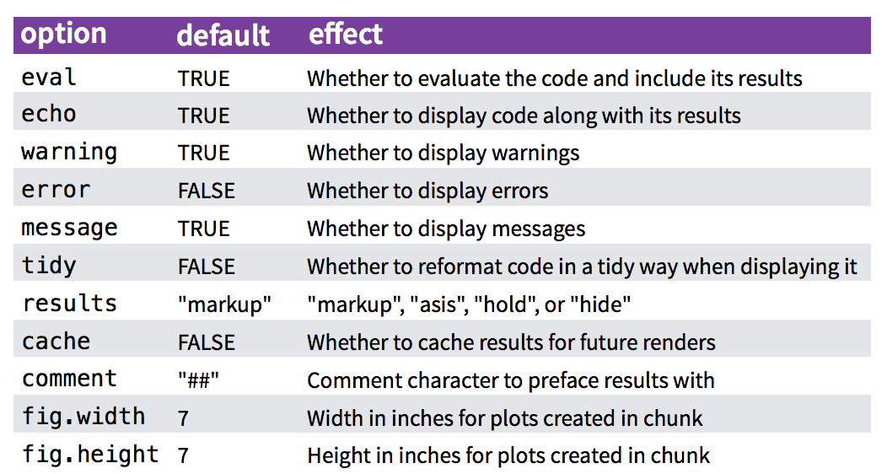
Chunk output options
By default, code chunks print code + output
A global setup chunk 🌍
- Typically the first chunk
- All following chunks will use these options (i.e., sets global chunk options)
- You can (and should) use individual chunk options too
- Often where I load libraries, etc.
Week 1: Getting Started
1. Course Goal
2. Course Introduction
3. Quarto
4. Workflow & Reading In Data
5. Wrangling Data
6. Visualizing Data
Workflow for reading in data
- Open your project folder in Positron - don’t double-click .R files!
- Import data with these functions:
| File type | Function | Library |
|---|---|---|
.csv |
read_csv() |
readr |
.txt |
read.table() |
utils |
.xlsx |
read_excel() |
readxl |
Importing Comma Separated Values (.csv)
Read in .csv files with read_csv():
#> # A tibble: 6 × 4
#> region state year milk_produced
#> <chr> <chr> <dbl> <dbl>
#> 1 Northeast Maine 1970 619000000
#> 2 Northeast New Hampshire 1970 356000000
#> 3 Northeast Vermont 1970 1970000000
#> 4 Northeast Massachusetts 1970 658000000
#> 5 Northeast Rhode Island 1970 75000000
#> 6 Northeast Connecticut 1970 661000000Importing Text Files (.txt)
Read in .txt files with read.table():
Importing Text Files (.txt)
Read in .txt files with read.table():
#> year no_smoothing loess
#> 1 1880 -0.15 -0.08
#> 2 1881 -0.07 -0.12
#> 3 1882 -0.10 -0.15
#> 4 1883 -0.16 -0.19
#> 5 1884 -0.27 -0.23
#> 6 1885 -0.32 -0.25Importing Excel Files (.xlsx)
Read in .xlsx files with read_excel():
#> Rows: 25
#> Columns: 10
#> $ Year <chr> NA, NA, "1995", "1996", "1997", "1998", "1999", "2000", "2001", "2002", "2003", "2004", "2005", "2006", "2007", "2008", "2009", "2010", "2011", "2012", "2013", NA, "Note: NA = data not available.", NA, "Source: Compiled by E…
#> $ China <chr> "Megawatts", NA, "NA", "NA", "NA", "NA", "NA", "2.5", "3", "10", "13", "40", "128.30000000000001", "341.8", "1192.8735755126208", "2535.9804999999997", "5193.2335000000003", "12882.114299891044", "24338.646000000004", "24139…
#> $ Taiwan <chr> NA, NA, "NA", "NA", "NA", "NA", "NA", "NA", "3.5", "8", "17", "39.299999999999997", "88", "169.5", "413.19362206495737", "871.4", "1573.2", "3755.9046488657718", "4773.1499999999996", "5270.1999999999989", "6338.565000000000…
#> $ Japan <dbl> NA, NA, 16.4, 21.2, 35.0, 49.0, 80.0, 128.6, 171.2, 251.1, 363.9, 601.5, 833.0, 926.4, 937.5, 1268.0, 1503.0, 2169.0, 2707.0, 2641.8, 3679.0, NA, NA, NA, NA
#> $ Malaysia <chr> NA, NA, "NA", "NA", "NA", "NA", "NA", "NA", "0", "0", "0", "0", "0", "0", "100.1", "397.9", "1228.0566037735848", "1919.0129442119946", "2684.5953947368421", "2597.365436241611", "3072.59", NA, NA, NA, NA
#> $ Germany <chr> NA, NA, "NA", "NA", "NA", "NA", "NA", "22.5", "23.5", "55", "121.5", "193", "339", "469.1", "815.35421116529074", "1476.6923205919056", "1606.0497978436656", "2181.2726133183096", "2152.8626315789475", "1406.7827181208054", …
#> $ `South Korea` <chr> NA, NA, "NA", "NA", "NA", "NA", "NA", "NA", "0", "0", "0", "0", "5.3", "13", "31.883935905674612", "70.848164851527258", "234", "886.29518449560589", "1227.3", "1107.0999999999999", "1127.0999999999999", NA, NA, NA, NA
#> $ `United States` <dbl> NA, NA, 34.7500, 38.8500, 51.0000, 53.7000, 60.8000, 75.0000, 100.3000, 120.6000, 103.0000, 138.7000, 153.1000, 177.6000, 261.9804, 403.1250, 594.7922, 1162.5177, 1044.1895, 886.4018, 868.4250, NA, NA, NA, NA
#> $ Others <chr> NA, NA, "NA", "NA", "NA", "NA", "NA", "48.200000000000017", "69.800000000000011", "97.299999999999955", "131", "186.29999999999995", "235.70000000000027", "361.09999999999991", "410.97322650945807", "709.03112641453299", "66…
#> $ World <dbl> NA, NA, 77.600, 88.600, 125.800, 154.900, 201.300, 276.800, 371.300, 542.000, 749.400, 1198.800, 1782.400, 2458.500, 4163.859, 7732.977, 12595.992, 26399.539, 40761.761, 39523.565, 44464.496, NA, NA, NA, NAImporting Excel Files (.xlsx)
Read in .xlsx files with read_excel():
#> Rows: 19
#> Columns: 10
#> $ Year <dbl> 1995, 1996, 1997, 1998, 1999, 2000, 2001, 2002, 2003, 2004, 2005, 2006, 2007, 2008, 2009, 2010, 2011, 2012, 2013
#> $ China <chr> "NA", "NA", "NA", "NA", "NA", "2.5", "3", "10", "13", "40", "128.30000000000001", "341.8", "1192.8735755126208", "2535.9804999999997", "5193.2335000000003", "12882.114299891044", "24338.646000000004", "24139.014999999999", "…
#> $ Taiwan <chr> "NA", "NA", "NA", "NA", "NA", "NA", "3.5", "8", "17", "39.299999999999997", "88", "169.5", "413.19362206495737", "871.4", "1573.2", "3755.9046488657718", "4773.1499999999996", "5270.1999999999989", "6338.5650000000005"
#> $ Japan <dbl> 16.4, 21.2, 35.0, 49.0, 80.0, 128.6, 171.2, 251.1, 363.9, 601.5, 833.0, 926.4, 937.5, 1268.0, 1503.0, 2169.0, 2707.0, 2641.8, 3679.0
#> $ Malaysia <chr> "NA", "NA", "NA", "NA", "NA", "NA", "0", "0", "0", "0", "0", "0", "100.1", "397.9", "1228.0566037735848", "1919.0129442119946", "2684.5953947368421", "2597.365436241611", "3072.59"
#> $ Germany <chr> "NA", "NA", "NA", "NA", "NA", "22.5", "23.5", "55", "121.5", "193", "339", "469.1", "815.35421116529074", "1476.6923205919056", "1606.0497978436656", "2181.2726133183096", "2152.8626315789475", "1406.7827181208054", "1054.88…
#> $ `South Korea` <chr> "NA", "NA", "NA", "NA", "NA", "NA", "0", "0", "0", "0", "5.3", "13", "31.883935905674612", "70.848164851527258", "234", "886.29518449560589", "1227.3", "1107.0999999999999", "1127.0999999999999"
#> $ `United States` <dbl> 34.7500, 38.8500, 51.0000, 53.7000, 60.8000, 75.0000, 100.3000, 120.6000, 103.0000, 138.7000, 153.1000, 177.6000, 261.9804, 403.1250, 594.7922, 1162.5177, 1044.1895, 886.4018, 868.4250
#> $ Others <chr> "NA", "NA", "NA", "NA", "NA", "48.200000000000017", "69.800000000000011", "97.299999999999955", "131", "186.29999999999995", "235.70000000000027", "361.09999999999991", "410.97322650945807", "709.03112641453299", "663.660000…
#> $ World <dbl> 77.600, 88.600, 125.800, 154.900, 201.300, 276.800, 371.300, 542.000, 749.400, 1198.800, 1782.400, 2458.500, 4163.859, 7732.977, 12595.992, 26399.539, 40761.761, 39523.565, 44464.496Your turn
10:00
Open the practice.qmd file.
Write code to import the following data files from the “data” folder:
- For
lotr_words.csv, call the data framelotr - For
north_america_bear_killings.txt, call the data framebears - For
uspto_clean_energy_patents.xlsx, call the data framepatents
Week 1: Getting Started
1. Course Goal
2. Course Introduction
3. Quarto
4. Workflow & Reading In Data
5. Wrangling Data
6. Visualizing Data
The data frame…
in Excel
in Excel
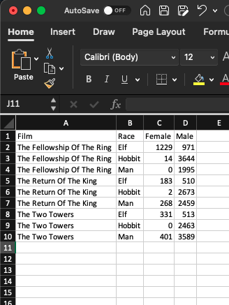
The data frame…
in
in
#> # A tibble: 18 × 4
#> film race gender word_count
#> <chr> <chr> <chr> <dbl>
#> 1 The Fellowship Of The Ring Elf Female 1229
#> 2 The Fellowship Of The Ring Elf Male 971
#> 3 The Fellowship Of The Ring Hobbit Female 14
#> 4 The Fellowship Of The Ring Hobbit Male 3644
#> 5 The Fellowship Of The Ring Man Female 0
#> 6 The Fellowship Of The Ring Man Male 1995
#> 7 The Return Of The King Elf Female 183
#> 8 The Return Of The King Elf Male 510
#> 9 The Return Of The King Hobbit Female 2
#> 10 The Return Of The King Hobbit Male 2673
#> 11 The Return Of The King Man Female 268
#> 12 The Return Of The King Man Male 2459
#> 13 The Two Towers Elf Female 331
#> 14 The Two Towers Elf Male 513
#> 15 The Two Towers Hobbit Female 0
#> 16 The Two Towers Hobbit Male 2463
#> 17 The Two Towers Man Female 401
#> 18 The Two Towers Man Male 3589Columns: Vectors of values (must be same data type)
Extract a column using $
Columns: Vectors of values (must be same data type)
Can also use brackets:
#> [1] "Elf" "Elf" "Hobbit" "Hobbit" "Man" "Man" "Elf" "Elf" "Hobbit" "Hobbit" "Man" "Man" "Elf" "Elf" "Hobbit" "Hobbit" "Man" "Man"#> # A tibble: 18 × 1
#> race
#> <chr>
#> 1 Elf
#> 2 Elf
#> 3 Hobbit
#> 4 Hobbit
#> 5 Man
#> 6 Man
#> 7 Elf
#> 8 Elf
#> 9 Hobbit
#> 10 Hobbit
#> 11 Man
#> 12 Man
#> 13 Elf
#> 14 Elf
#> 15 Hobbit
#> 16 Hobbit
#> 17 Man
#> 18 ManRows: Information about individual observations
Information about the first row:
#> # A tibble: 1 × 4
#> film race gender word_count
#> <chr> <chr> <chr> <dbl>
#> 1 The Fellowship Of The Ring Elf Female 1229Information about rows 1 & 2:
Quick Practice
Read in the data.csv file in the “data” folder:
Now answer these questions:
- How many rows and columns are in the data frame?
- What type of data is each column?
- Preview the different columns - what do you think this data is about? What might one row represent?
- How many unique airlines are in the data frame?
- What is the shortest and longest air time for any one flight in the data frame?
The tidyverse: stringr + dplyr + readr + ggplot2 + …
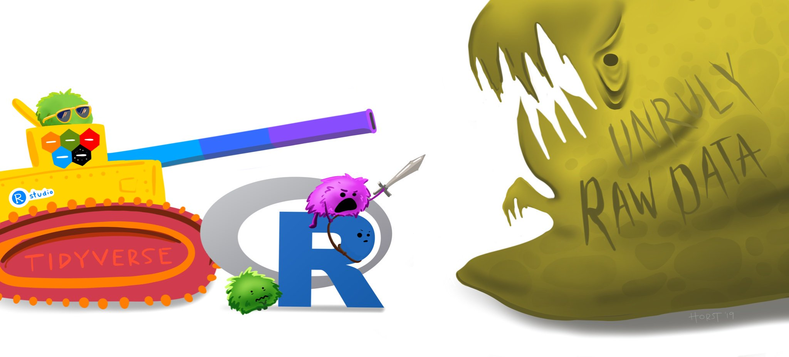
Art by Allison Horst
The main dplyr “verbs”
| “Verb” | What it does |
|---|---|
select() |
Select columns by name |
filter() |
Keep rows that match criteria |
arrange() |
Sort rows based on column(s) |
mutate() |
Create new columns |
summarize() |
Create summary values |
Core tidyverse concept:
Chain functions together with “pipes”
%>%
Think of the words “…and then…”
Select columns with select()
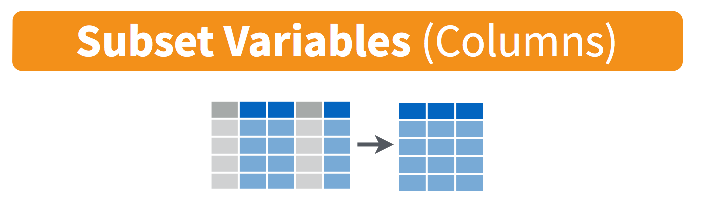
Select columns with select()
Select the columns film & race
#> # A tibble: 18 × 2
#> film race
#> <chr> <chr>
#> 1 The Fellowship Of The Ring Elf
#> 2 The Fellowship Of The Ring Elf
#> 3 The Fellowship Of The Ring Hobbit
#> 4 The Fellowship Of The Ring Hobbit
#> 5 The Fellowship Of The Ring Man
#> 6 The Fellowship Of The Ring Man
#> 7 The Return Of The King Elf
#> 8 The Return Of The King Elf
#> 9 The Return Of The King Hobbit
#> 10 The Return Of The King Hobbit
#> 11 The Return Of The King Man
#> 12 The Return Of The King Man
#> 13 The Two Towers Elf
#> 14 The Two Towers Elf
#> 15 The Two Towers Hobbit
#> 16 The Two Towers Hobbit
#> 17 The Two Towers Man
#> 18 The Two Towers ManSelect columns with select()
Use the - sign to drop columns
#> # A tibble: 18 × 3
#> race gender word_count
#> <chr> <chr> <dbl>
#> 1 Elf Female 1229
#> 2 Elf Male 971
#> 3 Hobbit Female 14
#> 4 Hobbit Male 3644
#> 5 Man Female 0
#> 6 Man Male 1995
#> 7 Elf Female 183
#> 8 Elf Male 510
#> 9 Hobbit Female 2
#> 10 Hobbit Male 2673
#> 11 Man Female 268
#> 12 Man Male 2459
#> 13 Elf Female 331
#> 14 Elf Male 513
#> 15 Hobbit Female 0
#> 16 Hobbit Male 2463
#> 17 Man Female 401
#> 18 Man Male 3589Filter for rows with filter()
Filter for rows with filter()
Keep only the rows with Elf characters
#> # A tibble: 6 × 4
#> film race gender word_count
#> <chr> <chr> <chr> <dbl>
#> 1 The Fellowship Of The Ring Elf Female 1229
#> 2 The Fellowship Of The Ring Elf Male 971
#> 3 The Return Of The King Elf Female 183
#> 4 The Return Of The King Elf Male 510
#> 5 The Two Towers Elf Female 331
#> 6 The Two Towers Elf Male 513Filter for rows with filter()
Keep only the rows with Elf or Hobbit characters
#> # A tibble: 12 × 4
#> film race gender word_count
#> <chr> <chr> <chr> <dbl>
#> 1 The Fellowship Of The Ring Elf Female 1229
#> 2 The Fellowship Of The Ring Elf Male 971
#> 3 The Fellowship Of The Ring Hobbit Female 14
#> 4 The Fellowship Of The Ring Hobbit Male 3644
#> 5 The Return Of The King Elf Female 183
#> 6 The Return Of The King Elf Male 510
#> 7 The Return Of The King Hobbit Female 2
#> 8 The Return Of The King Hobbit Male 2673
#> 9 The Two Towers Elf Female 331
#> 10 The Two Towers Elf Male 513
#> 11 The Two Towers Hobbit Female 0
#> 12 The Two Towers Hobbit Male 2463Filter for rows with filter()
Keep only the rows with Elf or Hobbit characters
#> # A tibble: 12 × 4
#> film race gender word_count
#> <chr> <chr> <chr> <dbl>
#> 1 The Fellowship Of The Ring Elf Female 1229
#> 2 The Fellowship Of The Ring Elf Male 971
#> 3 The Fellowship Of The Ring Hobbit Female 14
#> 4 The Fellowship Of The Ring Hobbit Male 3644
#> 5 The Return Of The King Elf Female 183
#> 6 The Return Of The King Elf Male 510
#> 7 The Return Of The King Hobbit Female 2
#> 8 The Return Of The King Hobbit Male 2673
#> 9 The Two Towers Elf Female 331
#> 10 The Two Towers Elf Male 513
#> 11 The Two Towers Hobbit Female 0
#> 12 The Two Towers Hobbit Male 2463Logic operators for filter()
| Description | Example |
|---|---|
| Values greater than 1 | value > 1 |
| Values greater than or equal to 1 | value >= 1 |
| Values less than 1 | value < 1 |
| Values less than or equal to 1 | value <= 1 |
| Values equal to 1 | value == 1 |
| Values not equal to 1 | value != 1 |
| Values in the set c(1, 4) | value %in% c(1, 4) |
Combine filter() and select()
Keep only the rows with Elf characters that spoke more than 1000 words, then select everything but the race column
Create new variables with mutate()
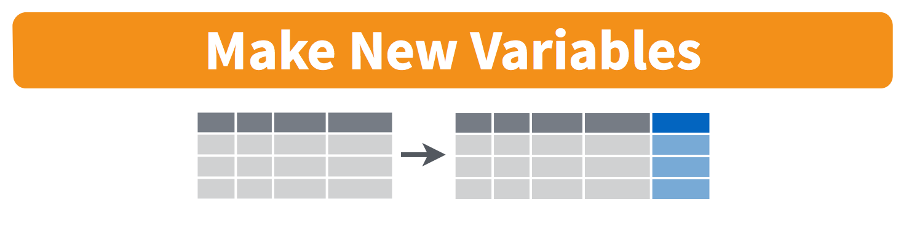
Create new variables with mutate()
Create a new variable, word1000 which is TRUE if the character spoke 1,000 or more words
#> # A tibble: 18 × 5
#> film race gender word_count word1000
#> <chr> <chr> <chr> <dbl> <lgl>
#> 1 The Fellowship Of The Ring Elf Female 1229 TRUE
#> 2 The Fellowship Of The Ring Elf Male 971 FALSE
#> 3 The Fellowship Of The Ring Hobbit Female 14 FALSE
#> 4 The Fellowship Of The Ring Hobbit Male 3644 TRUE
#> 5 The Fellowship Of The Ring Man Female 0 FALSE
#> 6 The Fellowship Of The Ring Man Male 1995 TRUE
#> 7 The Return Of The King Elf Female 183 FALSE
#> 8 The Return Of The King Elf Male 510 FALSE
#> 9 The Return Of The King Hobbit Female 2 FALSE
#> 10 The Return Of The King Hobbit Male 2673 TRUE
#> 11 The Return Of The King Man Female 268 FALSE
#> 12 The Return Of The King Man Male 2459 TRUE
#> 13 The Two Towers Elf Female 331 FALSE
#> 14 The Two Towers Elf Male 513 FALSE
#> 15 The Two Towers Hobbit Female 0 FALSE
#> 16 The Two Towers Hobbit Male 2463 TRUE
#> 17 The Two Towers Man Female 401 FALSE
#> 18 The Two Towers Man Male 3589 TRUEHandling if/else conditions
ifelse(<condition>, <if TRUE>, <else>)
#> # A tibble: 18 × 5
#> film race gender word_count word1000
#> <chr> <chr> <chr> <dbl> <lgl>
#> 1 The Fellowship Of The Ring Elf Female 1229 TRUE
#> 2 The Fellowship Of The Ring Elf Male 971 FALSE
#> 3 The Fellowship Of The Ring Hobbit Female 14 FALSE
#> 4 The Fellowship Of The Ring Hobbit Male 3644 TRUE
#> 5 The Fellowship Of The Ring Man Female 0 FALSE
#> 6 The Fellowship Of The Ring Man Male 1995 TRUE
#> 7 The Return Of The King Elf Female 183 FALSE
#> 8 The Return Of The King Elf Male 510 FALSE
#> 9 The Return Of The King Hobbit Female 2 FALSE
#> 10 The Return Of The King Hobbit Male 2673 TRUE
#> 11 The Return Of The King Man Female 268 FALSE
#> 12 The Return Of The King Man Male 2459 TRUE
#> 13 The Two Towers Elf Female 331 FALSE
#> 14 The Two Towers Elf Male 513 FALSE
#> 15 The Two Towers Hobbit Female 0 FALSE
#> 16 The Two Towers Hobbit Male 2463 TRUE
#> 17 The Two Towers Man Female 401 FALSE
#> 18 The Two Towers Man Male 3589 TRUESort data frame with arrange()
Sort the lotr data frame by word_count
#> # A tibble: 18 × 4
#> film race gender word_count
#> <chr> <chr> <chr> <dbl>
#> 1 The Fellowship Of The Ring Man Female 0
#> 2 The Two Towers Hobbit Female 0
#> 3 The Return Of The King Hobbit Female 2
#> 4 The Fellowship Of The Ring Hobbit Female 14
#> 5 The Return Of The King Elf Female 183
#> 6 The Return Of The King Man Female 268
#> 7 The Two Towers Elf Female 331
#> 8 The Two Towers Man Female 401
#> 9 The Return Of The King Elf Male 510
#> 10 The Two Towers Elf Male 513
#> 11 The Fellowship Of The Ring Elf Male 971
#> 12 The Fellowship Of The Ring Elf Female 1229
#> 13 The Fellowship Of The Ring Man Male 1995
#> 14 The Return Of The King Man Male 2459
#> 15 The Two Towers Hobbit Male 2463
#> 16 The Return Of The King Hobbit Male 2673
#> 17 The Two Towers Man Male 3589
#> 18 The Fellowship Of The Ring Hobbit Male 3644Sort data frame with arrange()
Use the desc() function to sort in descending order
#> # A tibble: 18 × 4
#> film race gender word_count
#> <chr> <chr> <chr> <dbl>
#> 1 The Fellowship Of The Ring Hobbit Male 3644
#> 2 The Two Towers Man Male 3589
#> 3 The Return Of The King Hobbit Male 2673
#> 4 The Two Towers Hobbit Male 2463
#> 5 The Return Of The King Man Male 2459
#> 6 The Fellowship Of The Ring Man Male 1995
#> 7 The Fellowship Of The Ring Elf Female 1229
#> 8 The Fellowship Of The Ring Elf Male 971
#> 9 The Two Towers Elf Male 513
#> 10 The Return Of The King Elf Male 510
#> 11 The Two Towers Man Female 401
#> 12 The Two Towers Elf Female 331
#> 13 The Return Of The King Man Female 268
#> 14 The Return Of The King Elf Female 183
#> 15 The Fellowship Of The Ring Hobbit Female 14
#> 16 The Return Of The King Hobbit Female 2
#> 17 The Fellowship Of The Ring Man Female 0
#> 18 The Two Towers Hobbit Female 0Your turn
10:00
Read in the data.csv file in the “data” folder:
- Create a new data frame,
flights_fall, that contains only flights that departed in the fall semester. - Create a new data frame,
flights_dc, that contains only flights that flew to DC airports (Reagan or Dulles). - Create a new data frame,
flights_dc_carrier, that contains only flights that flew to DC airports (Reagan or Dulles) and only the columns about the month and airline. - How many unique airlines were flying to DC airports in July?
- Create a new variable,
speed, in miles per hour using thetime(minutes) anddistance(miles) variables. - Which flight flew the fastest?
- Remove rows that have
NAforair_timeand re-arrange the resulting data frame based on the longest air time and longest flight distance.
Week 1: Getting Started
1. Course Goal
2. Course Introduction
3. Quarto
4. Workflow & Reading In Data
5. Wrangling Data
6. Visualizing Data
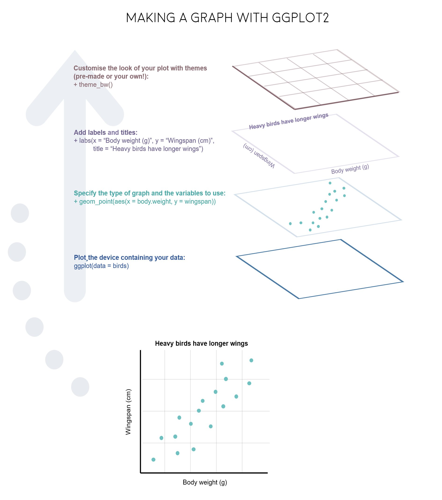
“Grammar of Graphics”
Concept developed by Leland Wilkinson (1999)
ggplot2 package developed by Hadley Wickham (2005)
Making plot layers with ggplot2
1. The data
2. The aesthetic mapping (what goes on the axes?)
3. The geometries (points? bars? etc.)
4. The annotations / labels
5. The theme
Layer 1: The data
#> # A tibble: 6 × 11
#> manufacturer model displ year cyl trans drv cty hwy fl class
#> <chr> <chr> <dbl> <int> <int> <chr> <chr> <int> <int> <chr> <chr>
#> 1 audi a4 1.8 1999 4 auto(l5) f 18 29 p compact
#> 2 audi a4 1.8 1999 4 manual(m5) f 21 29 p compact
#> 3 audi a4 2 2008 4 manual(m6) f 20 31 p compact
#> 4 audi a4 2 2008 4 auto(av) f 21 30 p compact
#> 5 audi a4 2.8 1999 6 auto(l5) f 16 26 p compact
#> 6 audi a4 2.8 1999 6 manual(m5) f 18 26 p compactLayer 1: The data
The ggplot() function initializes the plot with whatever data you’re using
Layer 2: The aesthetic mapping
The aes() function determines which variables will be mapped to the geometries
(e.g. the axes)
Layer 3: The geometries
Use + to add geometries, e.g. geom_points() for points

Layer 4: The annotations / labels
Use labs() to modify most labels

Layer 5: The theme

Common themes

Common themes

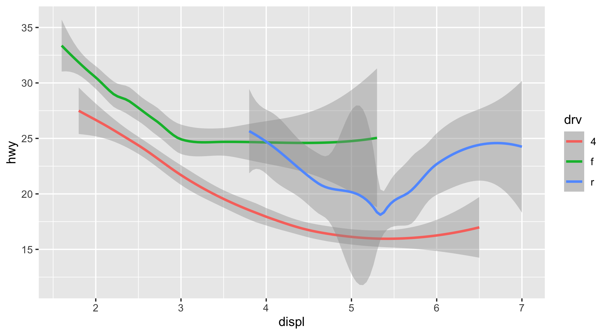
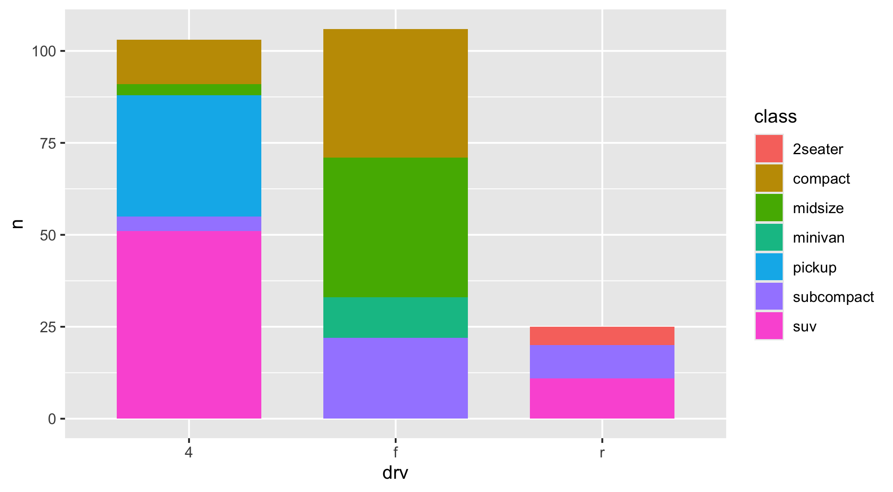
15:00
Your turn
Open practice.qmd
Use the mpg data frame and ggplot to create these charts

Extra practice